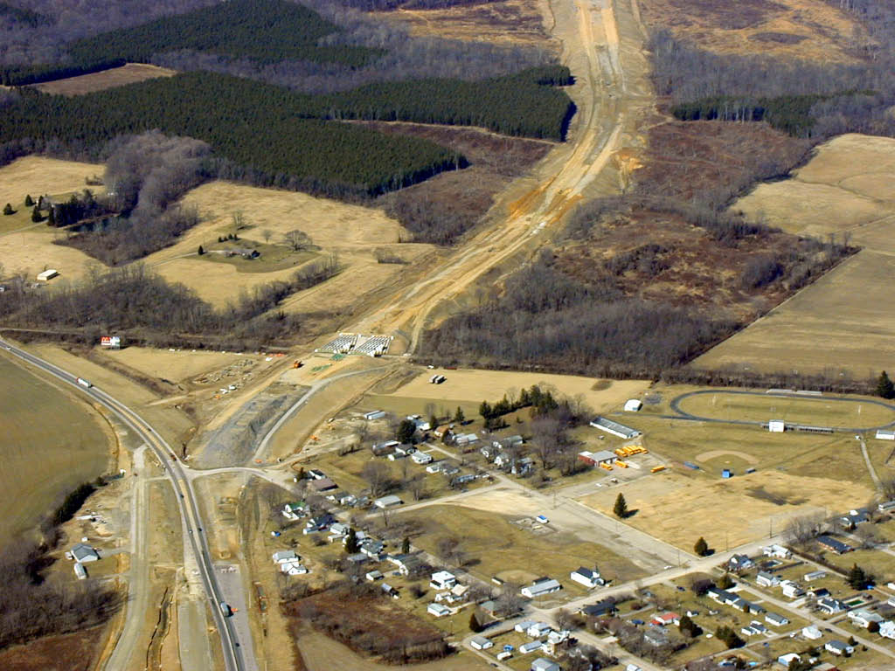

This is the Chillicothe end of the existing US 35 4-lane section, where US 50 splits off to the East (US 50 goes to the left, existing US 35 goes to the right)

This is the Richmondale end.. looking NW... existing US 35 goes to the left the twin bridges are over the Jackson Shortline RR SouthEastern High School used to be in the brown area by the school busses.This is the new interchange at Richmondale. The road to the top is Watson Road, and the road going into town is Vigo Road. US 35 crosses Salt Creek at the left. The connection to old US 35 is at the topmost right.